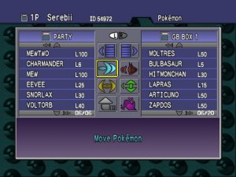
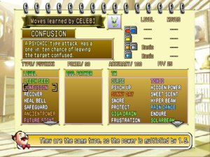
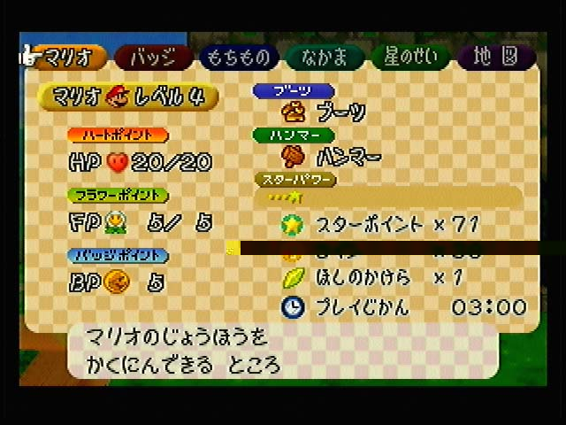
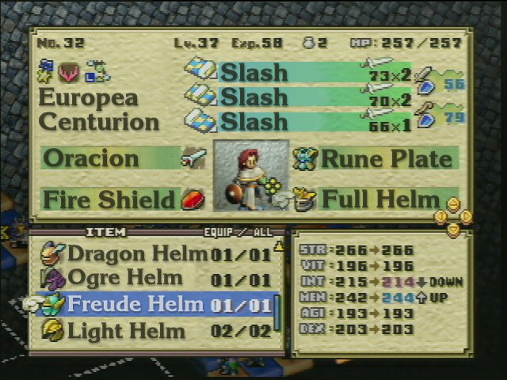
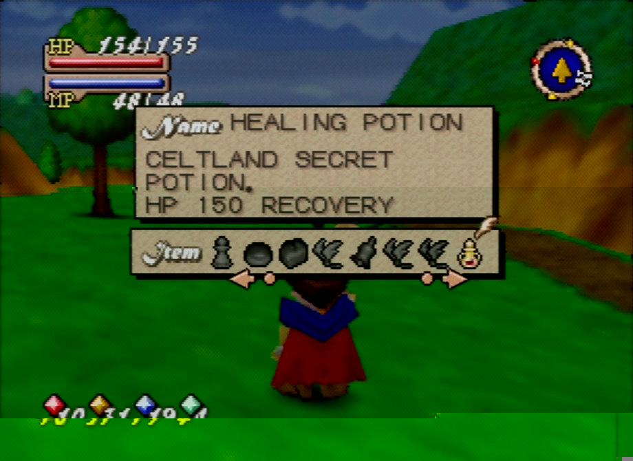
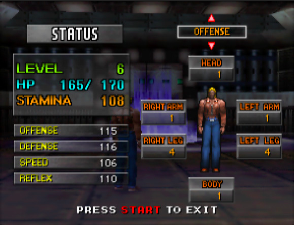
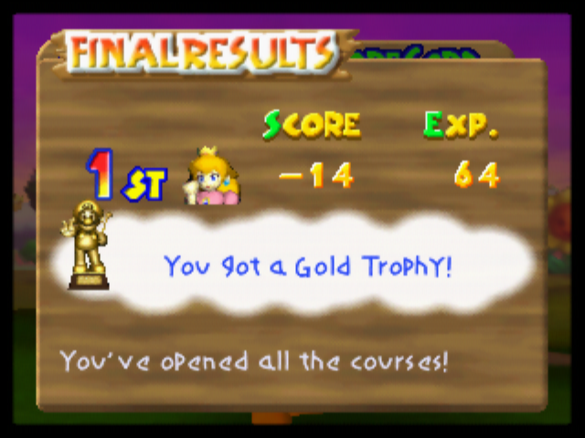
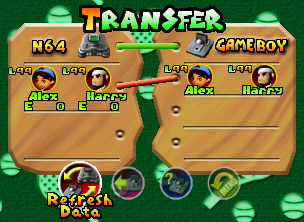
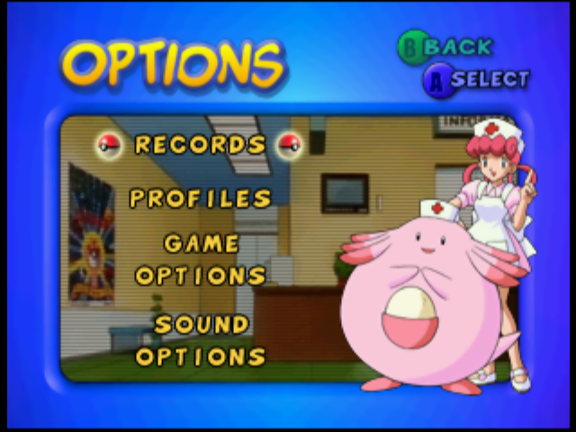
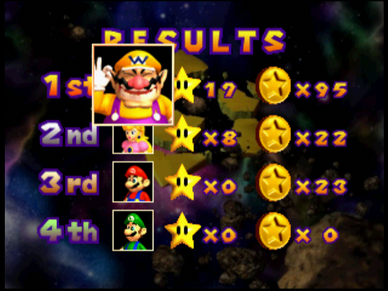

Ten original Nintendo 64 titles with lists, status, inventory, transfer and results screens. The closest matches are Stadium 2’s library, Stadium’s PC and Ogre Battle 64’s equipment page.
Published reference bytes are retained unchanged. Hardware, VI settings and prior scaling are often unspecified. This gallery compares design, not exact CRT or ares appearance. Copyright remains with the credited owners.
Keep felt, mirrored players, HP bars, paper turn plaques and existing coin/hit feedback. Prototype the hand first and judge it at native 320×240 through ares before expanding the change.
01. Pokémon Stadium
PC party / box transfer

Europe 2000-04-07 · 300×225 published image
- Give separate lists their own heading and aligned count columns.
- Use a filled selected row and an obvious directional cursor.
Published 300×225 JPEG, already resized by source. Hardware / VI / scaling unspecified. Western Stadium (JP Stadium 2); distinct from the Japan-only 1998 Stadium.
Credit: Serebii.net; Nintendo / HAL Laboratory
Screenshot source · Published image · Release verification
02. Pokémon Stadium 2
Academy library: Pokémon / moves

Europe 2001-10-19 · 300×225 published image
- Warm paper, colored tabs and one active list create a strong physical metaphor.
- Reserve a predictable area for the selected move or card description.
Published 300×225 JPEG, already resized by source. English N64 library UI; hardware / VI unspecified.
Credit: Serebii.net; Nintendo / HAL Laboratory
Screenshot source · Published image · Release verification
03. Paper Mario
Mario Story status page (Japanese)

Japan 2000-08-11 · 640×480 published image
- Make names, vital statistics and category tabs visibly different sizes.
- Broad low-contrast paper checks give personality without fine grain behind text.
Published 640×480 JPEG, Japanese N64 UI with black border. Hardware / VI / resizing and retail-versus-press build unspecified. Use for hierarchy, not exact glyph measurements.
Credit: RPGFan archive; Nintendo / Intelligent Systems
Screenshot source · Published image · Release verification
04. Ogre Battle 64
Equipment and comparison status

Japan 1999-07-14; English press image June 2000 · 640×480 published image
- Split persistent character state, the actionable list and the effect comparison into regions.
- A solid blue focus band, hand cursor and semantic comparison colors keep dense data readable.
640×480 publisher-supplied original-era English localization press screenshot. The source labels its June 2000 group Nintendo. May precede final English retail; not hardware VI proof.
Credit: Nintendo promotional screenshot, RPGamer June 2000 E3 group; Quest / Nintendo / Atlus
Screenshot source · Published image · Release verification
05. Quest 64
Item selection and effect description

North America 1998-06-01 · 920×670 published image
- Pair a large selected-item symbol with a short effect description.
- Opaque panels and a small cast shadow separate text from a busy scene.
Published 920×670 JPEG of original N64 UI, rescaled/cropped. Hardware / VI / filtering unspecified. Use for composition, not native pixel measurements.
Credit: RPGFan archive; Imagineer / THQ
Screenshot source · Published image · Release verification
06. Hybrid Heaven
Status and body-part offense

Japan 1999-08-05 · 579×443 published image
- Large numeric values on dark backing keep vital statistics prominent.
- A restrained cyan / amber / white vocabulary assigns colors a clear job.
Published 579×443 crop/rescale, original N64 status UI in a modern retrospective. Pipeline unspecified. Author discusses original Expansion Pak high-resolution mode; do not infer a 320×240 text budget from this sample.
Credit: Kenta / Kentendo Chronicles; Konami
Screenshot source · Published image · Release verification
07. Mario Golf
Final results board

Japan 1999-06-11 · 640×480 published image
- Give a result one large score, a strong headline and a recognizable reward symbol.
- Broad wood and bold outlined numerals provide period character without sacrificing hierarchy.
Published 640×480 PNG from original N64 ending sequence. Hardware / VI / scaling unspecified. Use for emphasis and materials.
Credit: VGMuseum / Rey; Nintendo / Camelot
Screenshot source · Published image · Release verification
08. Mario Tennis
Transfer Pak character slots and commands

Japan 2000-07-21 · 304×222 published image
- Paired character slots and arrows make relationships clear without extra prose.
- Bright active commands and subdued unavailable icons need distinct, consistent states.
304×222 PNG. File history explicitly says cropped from a 320×237 N64 screenshot to remove black border. Hardware / VI unspecified. No additional resampling here.
Credit: Super Mario Wiki / Wildgoosespeeder; Nintendo / Camelot
Screenshot source · Published image · Release verification
09. Pokémon Puzzle League
Options menu

North America 2000 · 640×480 published image
- Let one large portrait or card illustration accompany a clear list instead of illustrating every row.
- Keep A/B glyphs and short command labels together in a predictable corner.
Published 640×480 PNG from N64 gallery. Hardware / VI / scaling unspecified. Original N64 UI, distinct from Game Boy Color Puzzle Challenge.
Credit: VGMuseum / Rey; Nintendo / NST / Intelligent Systems
Screenshot source · Published image · Release verification
10. Mario Party
Final ranked results

Japan 1998-12-18 · 640×480 published image
- Aligned portraits, symbols and numerals communicate several resource counts compactly.
- One large ordinal establishes the result before secondary numbers are read.
Published 640×480 PNG from original N64 ending sequence. Hardware / VI / scaling unspecified. Not the Superstars remake.
Credit: VGMuseum / Rey; Nintendo / Hudson Soft
Screenshot source · Published image · Release verification